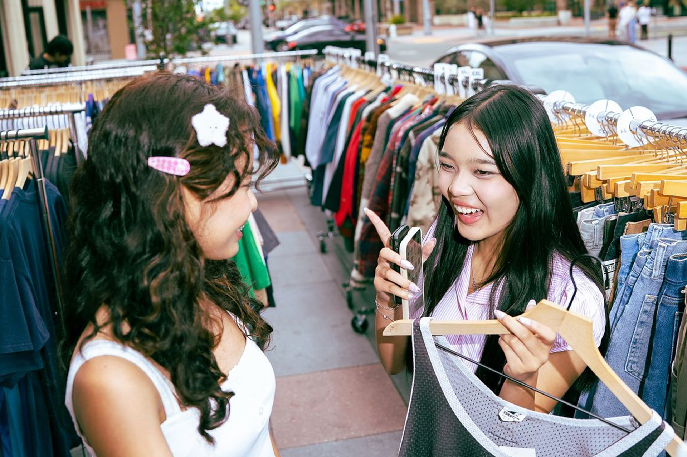
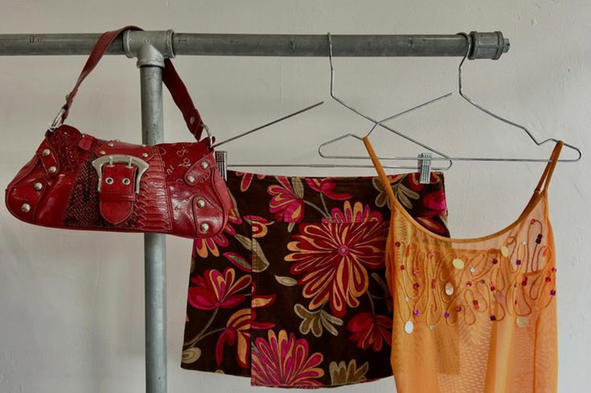
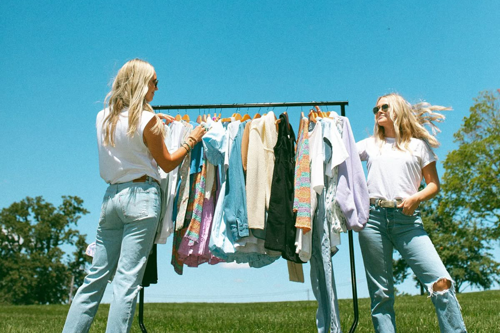

The Thrill of the Thrift
There is a particular kind of person who sets an alarm for a Saturday thrift run. They're not dragging themselves out of bed for a sale or a limited-time offer — there's no countdown timer, no doorbuster deal. They go early because they know something the casual shopper doesn't: the good stuff disappears fast. Thrifting, at its core, rewards the committed. The person who arrives when the doors open, who knows which stores restock on which days, who has a route mapped out before they've finished their morning coffee — that person is not just shopping. They are competing, in the quietest and most personal sense of the word. Against other shoppers, yes, but mostly against chance itself. And that tension, that awareness that the perfect piece might already be gone or might be one rack away, is what makes the whole thing electric.
Walk into any thrift store and you'll notice something immediately: there is no logic to the layout, not really. Blouses hang next to blazers. A sequined gown shares a rail with fleece zip-ups. Sizes are approximate suggestions. For the uninitiated, it can feel like sensory overload — too much, too dense, too disorganized to bother with. But for the experienced thrifter, that chaos is a feature, not a flaw. It demands a different kind of attention, a slower, more tactile engagement with clothing than you'd ever practice in a retail store. You have to touch things, turn them over, hold them up to the light. You have to look past what something is and imagine what it could be. That shift in perspective — from passive consumer to active hunter — changes your relationship with clothing entirely. You stop seeing garments as products and start seeing them as possibilities.

Part of what makes thrifting so compelling is that it is genuinely unpredictable. You can walk in hoping for a winter coat and walk out with a hand-embroidered blouse from the 1970s that you didn't know you needed until it was in your hands. You can visit the same store three weekends in a row and have a completely different experience each time. This is the antithesis of modern retail, where algorithms surface exactly what you searched for last Tuesday and personalization has collapsed the possibility of surprise. Thrifting refuses to be optimized. The store doesn't know you, doesn't track your preferences, and certainly isn't curating anything on your behalf. What you find is determined by what someone else let go of, by timing, by luck, by how carefully you looked. That randomness, so often treated as a drawback, is actually the whole point.
The psychological dimension of thrifting is something researchers have started to take seriously, and it's not hard to see why. The experience triggers what behavioral scientists call a variable reward — the same mechanism behind why people find themselves unable to put down a good mystery novel or keep refreshing a social media feed. When the reward is unpredictable, the brain leans in harder. Each rack becomes a small gamble. Most of what you touch won't be right, and that's fine, because you're not looking for most things. You're looking for the one thing. And when you find it — when the fabric is right and the fit is close and the price is almost offensively reasonable — the satisfaction is disproportionately large. It doesn't feel like buying something. It feels like winning something. That distinction might sound small, but it changes everything about how you carry the item home.

What keeps people coming back to thrift stores, season after season, is not just the deals or even the finds. It's the feeling of being genuinely present for something. In a world where most shopping happens in thirty seconds on a phone screen, thrifting demands your full attention for an hour or two. It asks you to slow down, to be curious, to stay open. It rewards patience in a way that almost nothing else in modern consumer culture does. And over time, it shapes you into a more intentional dresser — someone who knows what they actually like because they've had to make real decisions instead of clicking on what an algorithm recommended. The thrill of the thrift isn't just about the find. It's about who you become in the process of looking: someone who knows that the best things are rarely the most obvious, and that they're always worth the search.
